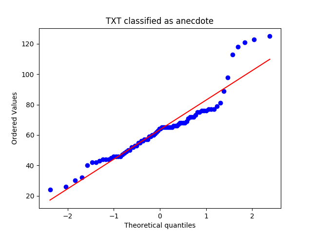
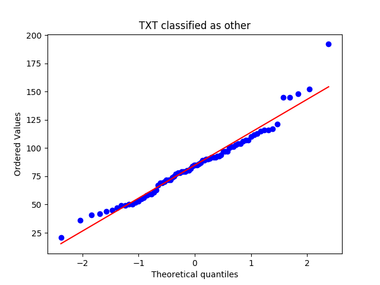
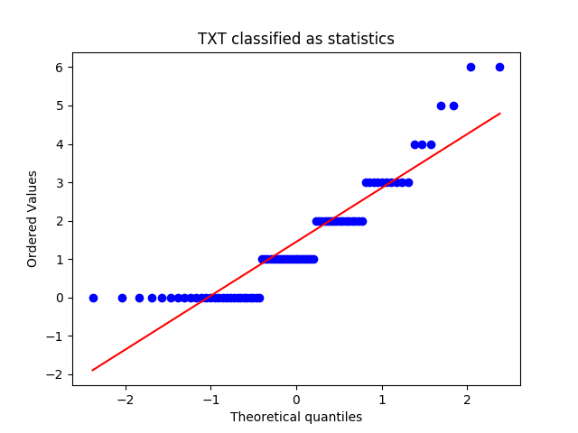
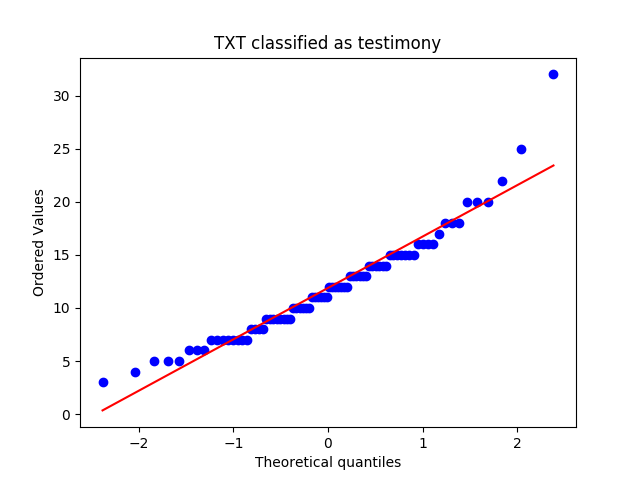
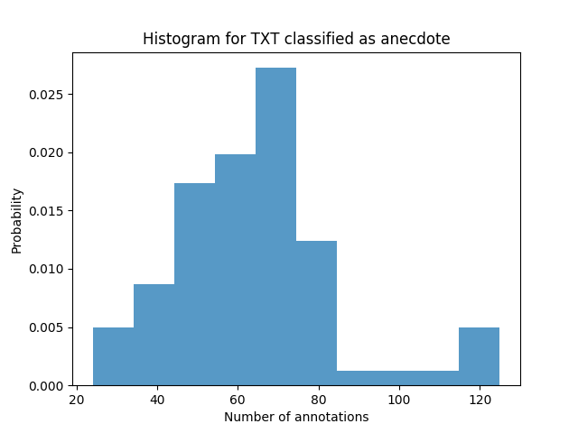
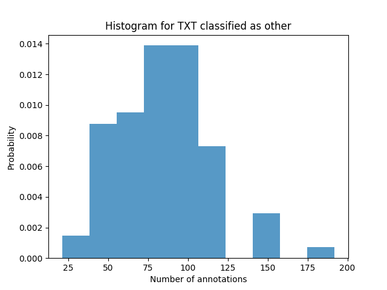
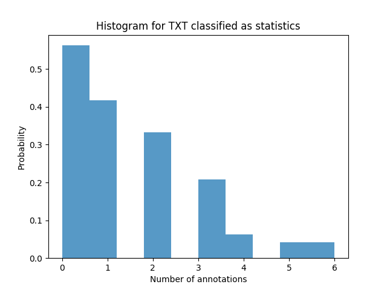
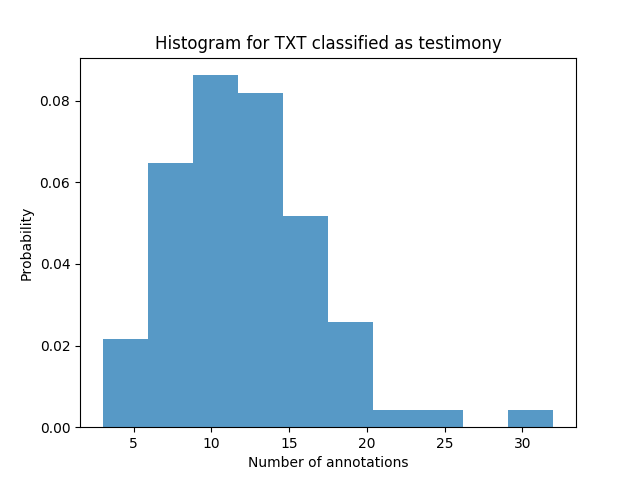
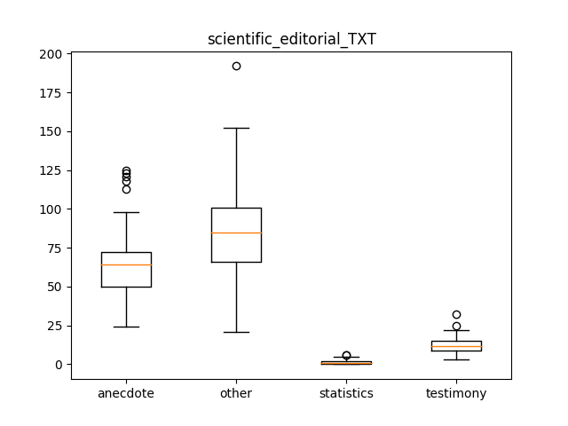

scientific_editorial_TXT
Describing the Data-Set
Mean, Median and Standard Deviation
|
anecdote |
other |
statistics |
testimony |
| median |
64.000000 |
85.000000 |
1.000000 |
11.500000 |
| mean |
63.512500 |
84.812500 |
1.450000 |
11.887500 |
| std |
19.986241 |
29.079672 |
1.482397 |
4.893858 |
QQ Plots




Histograms




Box Plot(s)

Normalization Test
stat: 0.905580341816, p-val:2.11203023355e-05
Not Normally distributed for TXT classified as anecdote
stat: 0.963840723038, p-val:0.0231954660267
Not Normally distributed for TXT classified as other
stat: 0.849908947945, p-val:1.60716240316e-07
Not Normally distributed for TXT classified as statistics
stat: 0.939220011234, p-val:0.000874877150636
Not Normally distributed for TXT classified as testimony
Significancy Test
Using friedmann-test
Using friedmann-test
using stats.friedmanchisquare
chisq: 229.5
p-value: 1.77386164384e-49
statistic: 1726.71428571
p-value: 1.11022302463e-16
chi2:229.5
ranking[1.0, 3.875, 2.0, 3.125]
Post Hoc Analysis (holm_multitest):
------------------------------------------------------
Comparing: anecdote vs statistics
z_value: 10.4103314068
p_value: 0.0
adj_p_value: 0.0
--------------------------------------------------------------------------
Comparing: statistics vs other
z_value: 14.084566021
p_value: 0.0
adj_p_value: 0.0
--------------------------------------------------------------------------
Comparing: other vs testimony
z_value: 9.18558653544
p_value: 0.0
adj_p_value: 0.0
--------------------------------------------------------------------------
Comparing: anecdote vs testimony
z_value: 5.51135192126
p_value: 3.56087936915e-08
adj_p_value: 1.06826381074e-07
--------------------------------------------------------------------------
Comparing: statistics vs testimony
z_value: 4.89897948557
p_value: 9.6335700861e-07
adj_p_value: 1.92671401722e-06
--------------------------------------------------------------------------
Comparing: anecdote vs other
z_value: 3.67423461417
p_value: 0.000238563454029
adj_p_value: 0.000238563454029
--------------------------------------------------------------------------